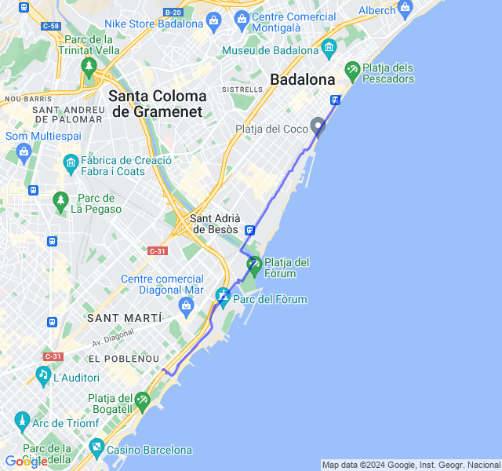
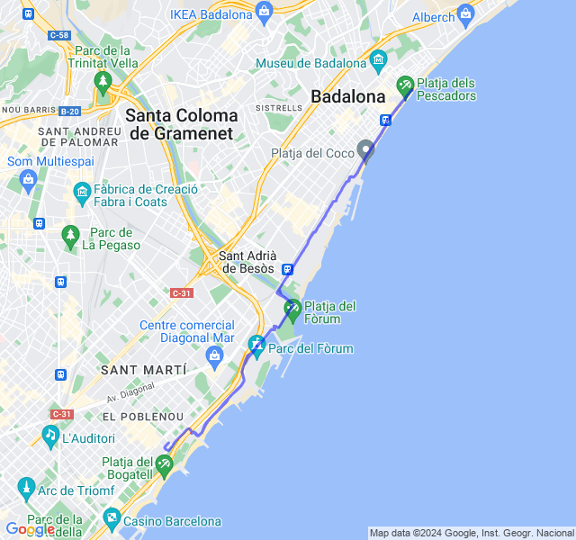
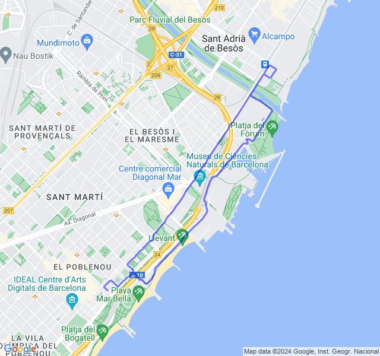
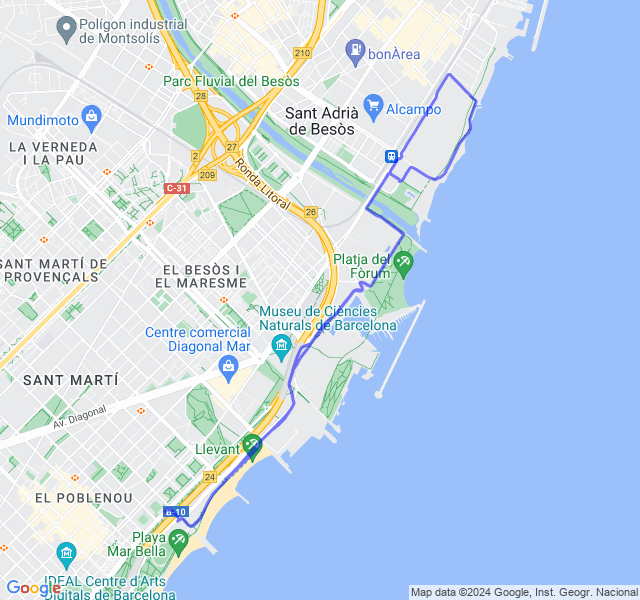
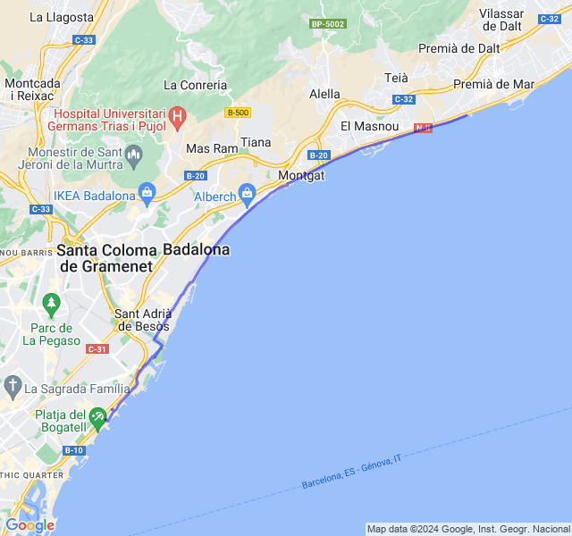

Settimana 10
Settimana del secondo lunghissimo: bah!
Non una gran settimana, segnata dalla stanchezza e allenamenti non tropo riusciti.
Prima uscita
14km Z1. Oggi le gambe giravano poco, ho fatto più fatica del dovuto.

Seconda uscita
5x1500 Z4. Allenamento bello tosto. Son partito non so perchè con già i polpacci doloranti. Le ultime ripetute con il vento contrario e un po' di salita son state dure ma son contento di averle finite! Durante il defaticamento mi son ripreso e avrei anche potuto continuare un po' 😛

Terza uscita
Potenziamento + 8km corsa lenta. Solito doppio allenamento del martedì andato abbastanza bene anche se ho corso veramente tardi e la fame si faceva sentire.

Quarta uscita
10km Z2. Oggi poche energie e si vede dalla FC che è stata sempre un po' troppo alta. Speriamo bene per il lungo di sabato

Quinta uscita
5km Z1 + 20km Z2 + 8km Z3.

La settimana si conclude come era iniziata: non benissimo. Sono partito forse troppo forte e comunque coi battiti alti rispetto al solito. In ogni caso fino al 16esimo km tutto tranquillo, fatica quasi zero. Quando mi sono girato per tornare mi sono accorto della brezzolina che mi aveva spinto un po' fino a quel punto e per tenere il passo i battiti son aumentati ancora un po'. Ovviamente il vento si è alzato e, soprattutto per gli ultimi 8km in Z3 era abbastanza forte e son un po' scoppiato. Per di più un sacco di gente in giro che mi ha obbligato a fare zig zag, rallentare e ripartire. E dopo una salitina dove ho dovuto imprecare contro dei vecchietti che camminavano perfettamente allineati occupando un marciapiede largo 5 metri, mi son pure fermato a camminare un minuto.
Non son un granchè soddisfatto di questo lungo 🤨
